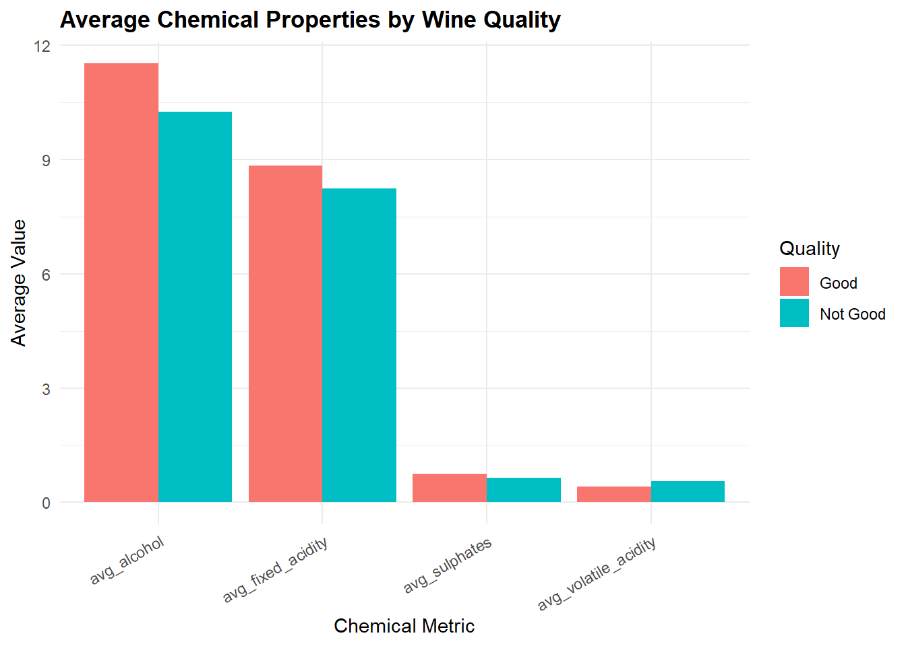
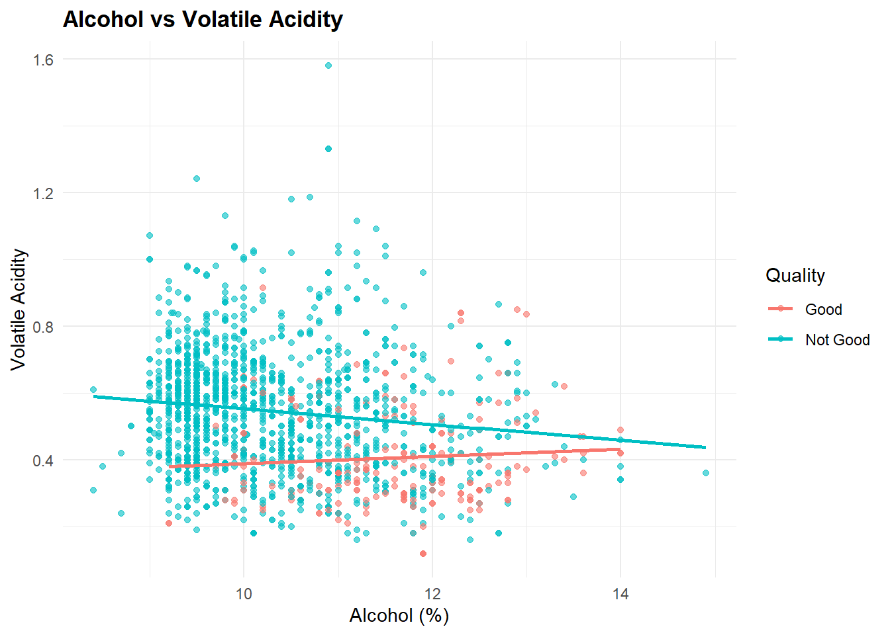

title: “What Drives Red Wine Quality? An Analysis of Alcohol, Acidity, and Chemical Properties” author: “Bryson Laney” format: md: default execute: echo: true warning: false message: false —
Introduction and Research Question
Wine quality is influenced by a complex interaction of chemical and sensory attributes. Understanding which measurable properties most strongly relate to perceived quality can help winemakers improve production decisions and help consumers better interpret wine characteristics.
Primary Research Question:
Which physicochemical properties are most strongly associated with higher-quality red wine, and how do alcohol content and acidity relate to quality ratings?
Data Source
The dataset comes from the UCI Machine Learning Repository and contains 1,599 observations of Portuguese red wines. Each observation includes physicochemical measurements and a sensory quality score assigned by wine experts.
# Load required librarieslibrary(tidyverse)
Warning: package 'tidyverse' was built under R version 4.5.2
Warning: package 'ggplot2' was built under R version 4.5.2
Warning: package 'tibble' was built under R version 4.5.2
Warning: package 'tidyr' was built under R version 4.5.2
Warning: package 'readr' was built under R version 4.5.2
Warning: package 'purrr' was built under R version 4.5.2
Warning: package 'dplyr' was built under R version 4.5.2
Warning: package 'stringr' was built under R version 4.5.2
Warning: package 'forcats' was built under R version 4.5.2
Warning: package 'lubridate' was built under R version 4.5.2
── Attaching core tidyverse packages ──────────────────────── tidyverse 2.0.0 ──
✔ dplyr 1.1.4 ✔ readr 2.1.6
✔ forcats 1.0.1 ✔ stringr 1.6.0
✔ ggplot2 4.0.1 ✔ tibble 3.3.0
✔ lubridate 1.9.4 ✔ tidyr 1.3.1
✔ purrr 1.2.0
── Conflicts ────────────────────────────────────────── tidyverse_conflicts() ──
✖ dplyr::filter() masks stats::filter()
✖ dplyr::lag() masks stats::lag()
ℹ Use the conflicted package (<http://conflicted.r-lib.org/>) to force all conflicts to become errors
# Import data from remote source (semicolon-delimited)wine <-read_delim("https://archive.ics.uci.edu/ml/machine-learning-databases/wine-quality/winequality-red.csv",delim =";",show_col_types =FALSE)
Data Wrangling
Basic Wrangling
I selected relevant variables and create a binary quality label. Wines with a quality score of 7 or higher are labeled as Good, while others are labeled as Not Good.
ggplot(wine_clean, aes(x = quality_label, y =`alcohol`, fill = quality_label)) +geom_boxplot(alpha =0.7) +labs(title ="Alcohol Content by Wine Quality",x ="Wine Quality",y ="Alcohol (%)" ) +theme_minimal() +theme(legend.position ="none",plot.title =element_text(face ="bold") )
Interpretation:
Higher-quality wines tend to have noticeably higher alcohol content, indicating alcohol percentage is a strong driver of perceived quality.
Chart 2: Average Chemical Properties by Quality Group
ggplot(wine_long, aes(x = metric, y = value, fill = quality_label)) +geom_col(position ="dodge") +labs(title ="Average Chemical Properties by Wine Quality",x ="Chemical Metric",y ="Average Value",fill ="Quality" ) +theme_minimal() +theme(axis.text.x =element_text(angle =30, hjust =1),plot.title =element_text(face ="bold") )

Interpretation:
Good-quality wines show lower volatile acidity and higher sulphate levels, consistent with established enological principles.
Chart 3: Alcohol vs Volatile Acidity
ggplot(wine_clean, aes(x =`alcohol`, y =`volatile acidity`, color = quality_label)) +geom_point(alpha =0.6) +geom_smooth(method ="lm", se =FALSE) +labs(title ="Alcohol vs Volatile Acidity",x ="Alcohol (%)",y ="Volatile Acidity",color ="Quality" ) +theme_minimal() +theme(plot.title =element_text(face ="bold") )
`geom_smooth()` using formula = 'y ~ x'

Interpretation:
Higher-quality wines cluster at higher alcohol levels and lower volatile acidity, reinforcing the importance of these two variables.
Discussion and Conclusions
This analysis shows that alcohol content is the strongest single indicator of red wine quality in this dataset, followed by sulphates and volatile acidity. These findings can inform winemaking decisions such as fermentation control and grape selection.
Limitations include subjective quality ratings and the lack of sensory attributes such as aroma or mouthfeel.